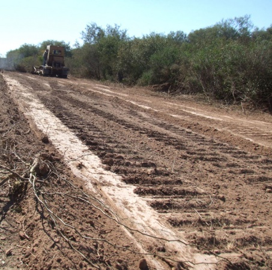
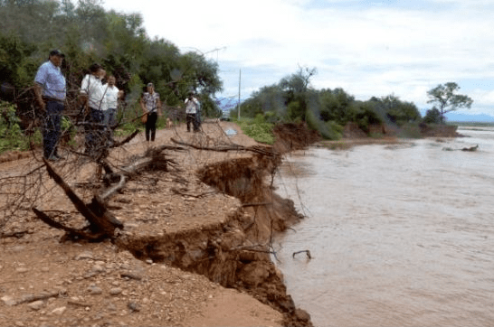
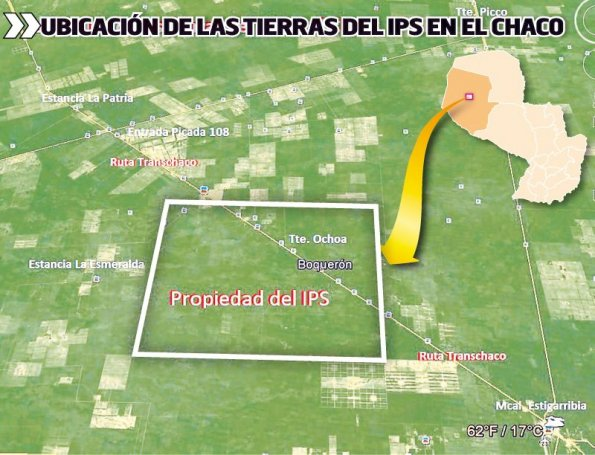
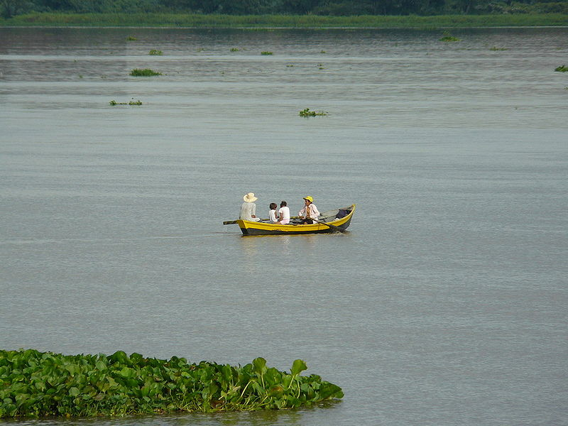
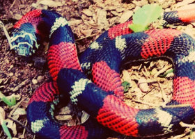

Historias de “Accesibilidad y deforestación“
-
 -
 Dique de colas de la mina Santiago Apóstol revienta y contamina el río Pilcomayo
-
 Hay depredación en las 200.000 hectáreas que IPS alquila en el Chaco
-
 Descienden las aguas del Paraná en Chaco y 1.100 familias se mantienen autoevacuadas
-
Campaña en Rusia se dirige al mercado de carne más importante de Paraguay
-
 Presentan guía sobre la fauna silvestre en el Gran Chaco
-
El Senado argentino analiza la creación de un nuevo Parque Nacional en el Gran Chaco Americano
-

Puesto de guardabosques fue utilizada por los cazadores furtivos
-
Nacional Geographic en vivo! : Erika Cuéllar: Conservación Hands-on